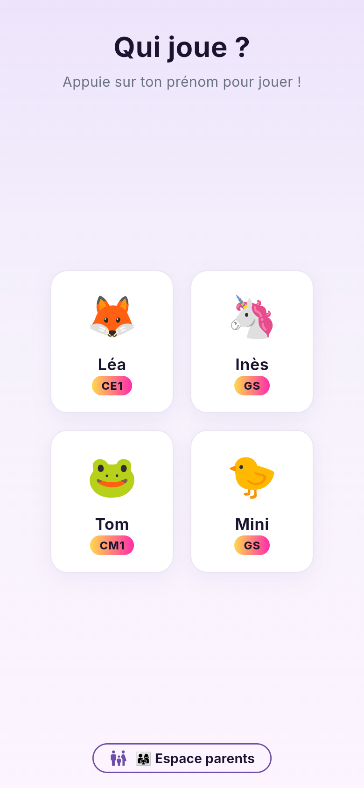
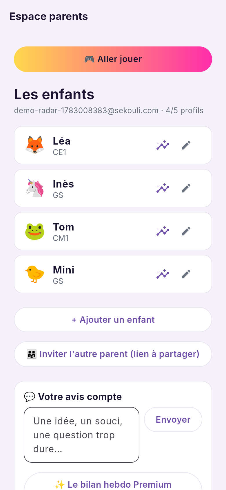
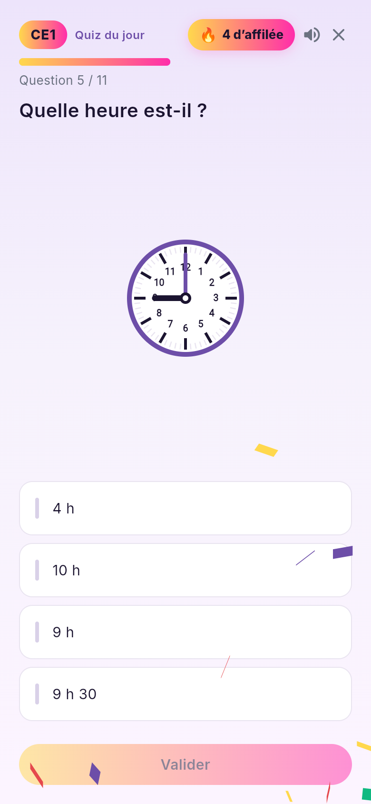
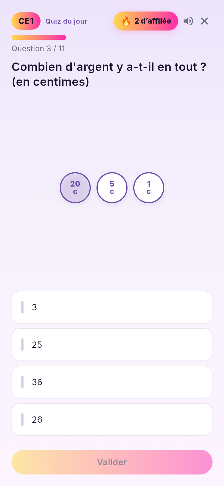
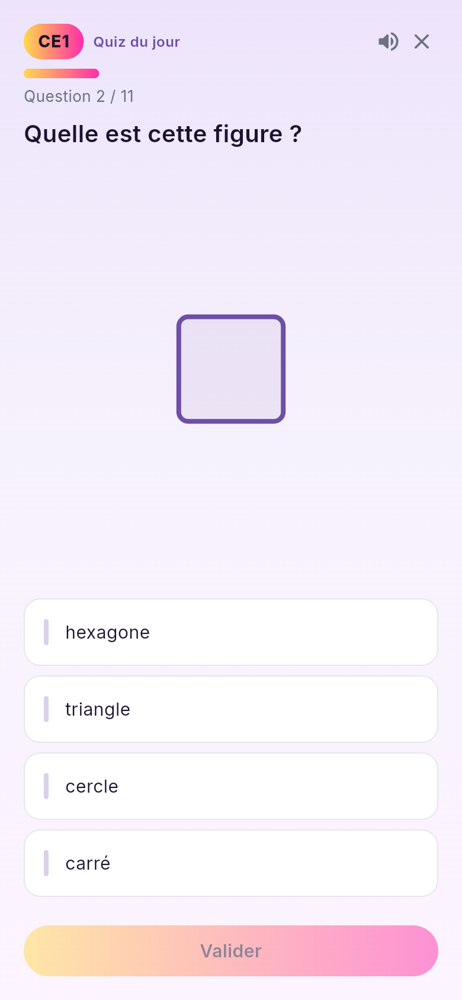
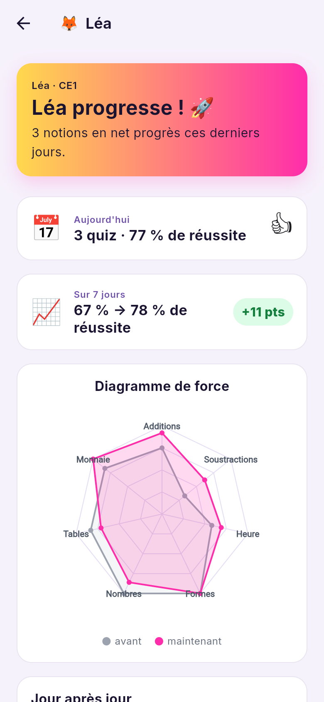
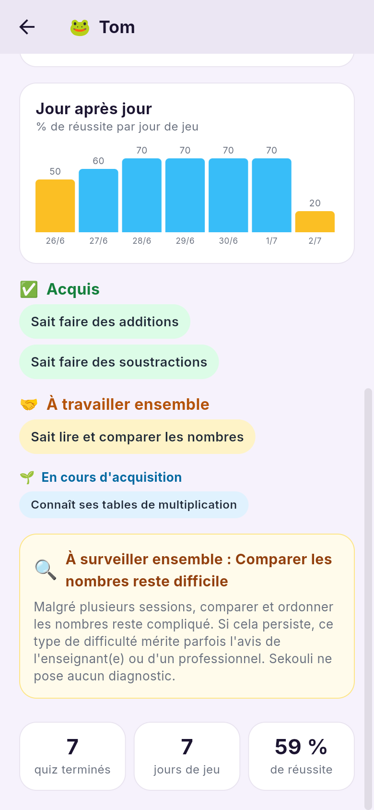

Merci pour vos premiers retours : tout y est déjà !
Vous avez testé, vous avez parlé, on a écouté 👂 — voici ce qui a été ajouté grâce à vos retours :
tous les niveaux de la grande section au CM2, la gestion des fratries, le compte pour les deux parents
(garde alternée comprise), de nouvelles notions (heure, monnaie, géométrie…) et un vrai suivi de
progression de votre enfant. Petit tour du propriétaire 👇
1. Un profil par enfant demandé par vous ✓
Fratries, jumeaux, niveaux différents : jusqu'à 5 enfants par compte, du niveau fin de GS au CM2.


Sur l'écran d'accueil, touchez 👨👩👧 Espace parents et créez le compte (email + mot de passe).
+ Ajouter un enfant : prénom, niveau (GS → CM2), avatar.
L'enfant n'a plus qu'à toucher son prénom sur « Qui joue ? » — jamais de mot de passe pour lui.
Chaque enfant a sa propre difficulté adaptative et sa propre progression — même les jumeaux du même niveau.
2. Le lien pour l'autre parent demandé par vous ✓
Garde alternée sans prise de tête : les deux parents voient les mêmes profils et la même progression.
Dans l'Espace parents, touchez 👨👩👧 Inviter l'autre parent (lien à partager) — visible sur la capture ci-contre.
Le lien est copié : envoyez-le par SMS ou WhatsApp.
L'autre parent l'ouvre sur son téléphone : il est automatiquement connecté au même compte famille. C'est tout.
Le lien est valable 7 jours. L'enfant retrouve sa partie et sa progression chez papa comme chez maman, sur n'importe quel appareil.
3. Heure, monnaie, géométrie… demandé par vous ✓
De nouvelles notions avec de vrais supports visuels — on manipule, on ne récite pas.



4. La progression de votre enfant demandé par vous ✓
Le « diagramme de force » (gris = avant, rose = maintenant), la réussite jour après jour, et des repères clairs : acquis, en cours, à travailler ensemble.


Espace parents → touchez la carte de l'enfant.
En un regard : ses points forts, ses progrès de la semaine (+11 pts ici 😉) et le résultat du jour.
Si une difficulté persiste (ex. comparer les nombres), une alerte douce « À surveiller ensemble » vous invite à en parler à l'enseignant(e). Sekouli ne pose jamais de diagnostic.
📲 Installer le jeu
iPhone / ordinateur : ouvrez game.sekouli.com/daily — sur iPhone : Safari → Partager → « Sur l'écran d'accueil » pour l'avoir comme une app.
Android : téléchargez game.sekouli.com/sekouli.apk puis ouvrez le fichier. Android demandera d'« autoriser l'installation depuis cette source » : c'est normal pour une app hors Play Store — elle est signée par Sekouli.
Le petit rituel : un quiz par jour (5-10 min). Les enfants connectés peuvent enchaîner « Encore un quiz ! » 🚀